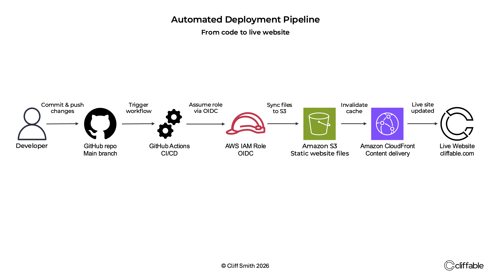

Published 23 May 2026
Building my first CI/CD pipeline
Moving from manual S3 uploads to a GitHub Actions deployment pipeline using OIDC, IAM roles and CloudFront invalidation.
{kind=link}

From local code changes to automated live deployment.
The original workflow
This project started as a way to remove manual deployment steps from the Cliffable static website workflow. Previously, changes were uploaded directly to S3 by hand after local testing.
While this worked for a small personal site, it quickly became obvious that the process was:
- slow
- error-prone
- difficult to scale
- lacking rollback visibility
The goal was to build a lightweight CI/CD pipeline that could automatically deploy changes whenever code was pushed to the main branch.
How the pipeline works
The automated deployment pipeline connects GitHub, GitHub Actions and AWS into a single workflow that deploys website updates automatically whenever new code is pushed to the repository.
When code is pushed to the main branch, GitHub Actions automatically triggers a workflow defined inside the repository. The workflow authenticates to AWS using OpenID Connect (OIDC), temporarily assumes a tightly scoped IAM role and synchronises the website files to the S3 bucket hosting the site.
After deployment, the workflow creates a CloudFront invalidation so cached files are refreshed across the CDN. This ensures visitors immediately receive the latest version of the website.
Security improvements
One of the most important improvements was removing long-lived AWS access keys from the deployment process. Instead of storing permanent credentials inside GitHub, the workflow uses OpenID Connect (OIDC) to request temporary credentials directly from AWS.
{kind=link}
GitHub Actions is allowed to assume a tightly scoped IAM role that only grants permission to deploy the website and create CloudFront invalidations. Access is further restricted to the Cliffable repository and the main branch.
What I learned
This project was my first experience building a real CI/CD deployment workflow using GitHub Actions and AWS. It reinforced how much operational complexity can be removed with relatively simple automation.
It also highlighted the importance of security boundaries in cloud systems. Learning how OIDC trust relationships, IAM policies and repository restrictions work together gave me a much better understanding of secure deployment design.
Beyond the technical implementation itself, the project changed the way I think about infrastructure management. Deployments became faster, more repeatable and significantly less stressful than manual uploads.
Conclusion
Automating deployments removed a large amount of manual operational overhead from the Cliffable website workflow while also improving security and consistency. It was a relatively small project technically, but a significant step forward in understanding how modern cloud deployment pipelines are designed and operated.
Related project
This deployment pipeline was implemented as part of the WordPress on AWS Lightsail project.